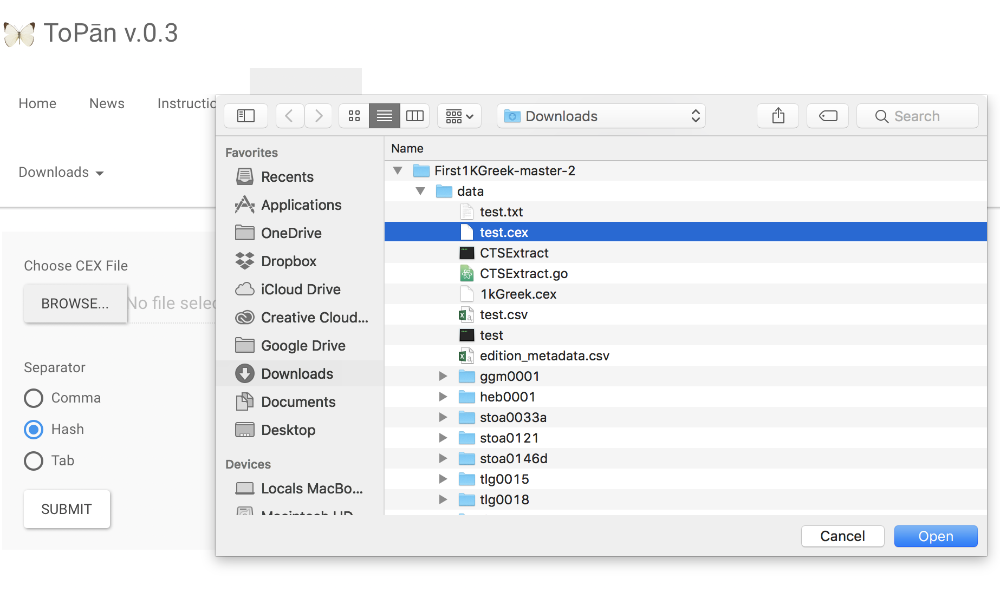
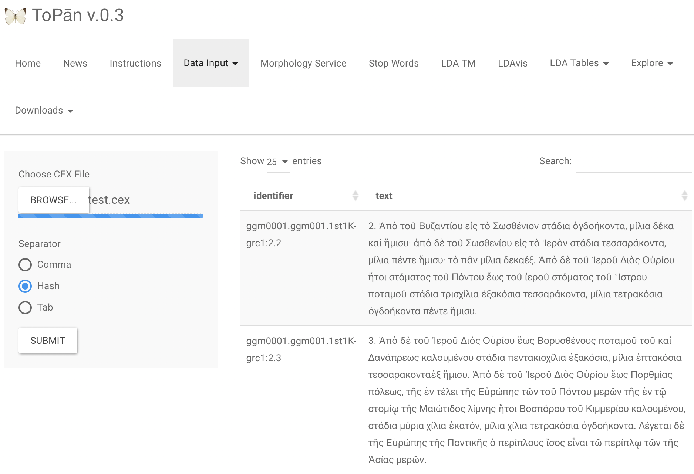

Source text collections and other complex datasets can be very difficult to share and reuse, and especially difficult to aggregate and disaggregate. CEX, CITE Exchange is a plain-text, self-documenting, technology-agnostic format for capturing citable texts, data collections, and arbitrary relationships among citable data at any level of granularity. CEX is based on the CITE/CTS architecture 1 and it positions itself as an alternative and complement to TEI XML and relational database schemas. TEI XML is a great archival format for storing textual information and metadata of individual editions. Managing and sharing text collections, however, can be cumbersome, especially if you only want to share a collection of excerpts based on hundreds of individual TEI XML files. When teaching text-heavy humanities disciplines, such as history, literature or classics, scholars are constantly faced with the problem of creating a source-text collections (that is, a corpus of excerpts of a bigger corpus that is deemed a representative sample able to answer a scholarly investigation), and the challenge of easily sharing this newly generated collection with students and colleagues. Based on current forms of data exchange, scholars and their students facing this task needed to have intimate knowledge of either database solutions like eXistDB 2 or of API-calls 3 . CEX circumvents this problem by simplifying the format of exchanging texts and related objects following the OCHO2 principles laid out in the CITE/CTS architecture 4 .
Likewise, data collections (coins, geo-spatial data, manuscript folios, etc.) are efficiently served intact by relational databases. Extracting subsets, sharing datasets in whole or in part, and aggregating disparate collections with schemas can be very difficult. CEX, as an exchange format, simplifies this.
This paper is directed to two types of scholars: technology-savvy colleagues who want to discuss simple interchange formats for data-sets and colleagues who want to build, analyze, and exchange soure text collections with fellow researchers and students. The paper will introduce CEX, its design, utilities, and code libraries for creating, validating, and manipulating it, and examples of two types of end-user applications: applications that help to build CEX collections and applications that enable students and scholars to perform natural language processing on exchanged CEX collections. In the first part of the paper we will describe the format and structure of CEX, while the second part showcases sample applications.
CEX is based on clearly defined data models for texts and data collections. These data models define semantics of scholarly primitives. CITE and CTS URN citations capture the semantics of the objects they identify. CEX defines catalogs documenting repositories of texts and collections, and blocks of data capturing the data of the texts and collections themselves.
A CEX file is a plain text, UTF-8 file, containing blocks for distinct types of data. The CEX specification provides blocks for:
Each text-block consists of a header line, followed by data records. Each line is a record, and fields within the lines are separated by a delimiting character ("#" is the default, but this is configurable).
Blocks are optional. A CEX file may contain only textual data, only collection data, or a combination of these. We will demonstrate using CEX files that contain millions of words of textual data and hundreds of thousands of data-records for collections.
In this paper, we will present these blocks, and the clearly defined abstract generic data models that they implement. ## Sample applications
We will demonstrate a sampling of utilities, services, and applications for creating, valdating, browsing, and analyzing scholarly data from CEX-formatted text files. All of these are openly licensed, with source code freely available on GitHub.
TEItoCEX 5 is a CTS TEI XML parser. It is written in Go and can be compiled to any operating system, including OS for Raspberry Pi 6 . It can be copied to the parent folder of multiple TEI CTS XML files. Once executed it will produce a valid CEX collection from all the XML files. screenshot1
Brucheion is a browser-based transcription desk written in Go and based on ICT2. screenshot2 While the backend is based on the fast BoltDB, users can export and import CEX files to share transcriptions or feed them into analytical applications, such as (Meletē)ToPān v.0.3. screenshot3 and screenshot4
There are currently two implementations of CEX-based microservices. The first implementation we created is a prototype that helps the end-user retrieve textual nodes from CEX files via an HTTP API by simply using the barebone file system of the server as a backend. 7 It is written in Go and can be compiled to any operating system. The gitHub repository also includes executables for all major operating systems and documentation for usage. 8 A useful feature is that one can also retrieve textual nodes from remote CEX repositories by modifying config.json. Simplicity of implementation and usage was the driving force in developing this prototype. The work on this prototype spawned another implementation in Scala that could make use of all the features of the already existing Scala CTS/CITE library. 9
Another implementation written in Go is currently under development. This implementation includes features of the Scala library and some additional natural language processing capabilities and that make use of BoltDB in its backend. 10
(Meletē)ToPān is a GUI for topic modelling introduced at DH2016 in Krakow. It was written in R and is published on Zenodo 11 and Github 12 . Initially ToPān supported the predecessor of CEX, 82XF, which was developed in discussion at DH2016. 13 Since v.0.3, it also supports CEX. Using the CEX files for topic modelling gives users easy but precise control over which documents should be included in the analysis. It has become possible for any scholar to build a source text corpus with TEItoCEX and then feed it into ToPān. The researchers can then use Metallō 14 , a commandline based topic model exploration tool, to have a closer look at the created result.
The paper will include a live demonstration of TEItoCEX, ToPān, and Metallō. Scholars visiting this talk will be able to use and build CEX collection for analysis, teaching, and research.
CiteApp is a "zero-config" web application written in ScalaJS that allows browsing and searching of libraries of text, collection data, and images. CiteApp itself consists of a single HTML file and can run locally or on a server. CiteApp reads data in the form of CEX files (with, optionally, an accompanying directory of image files). CiteApp allows browsing texts in a library, browsing parallel texts and translations, querying texts for strings, tokens, and NGrams, browsing data-collections and querying their records, and browsing collections of images, querying metadata, and interacting with zoomable views of high resolution images. Images may be local or hosted remotely. 15
The audience for this talk will be able to take home a copy of CiteApp with sample libraries in CEX format of byzantine manuscript images and editions of the texts they contain.
TEItoCEX: Converting libraries of TEI documents to easily shared CEX files
TEItoCEX
(Meletē)ToPān: Topic Modeling files in CEX format
 
Brucheion: Integrated Image and Textual data
Brucheion
CiteApp: Browsing a multilingual text library
CiteApp
CiteApp: Searching for NGramsTEItoCEX
CiteApp